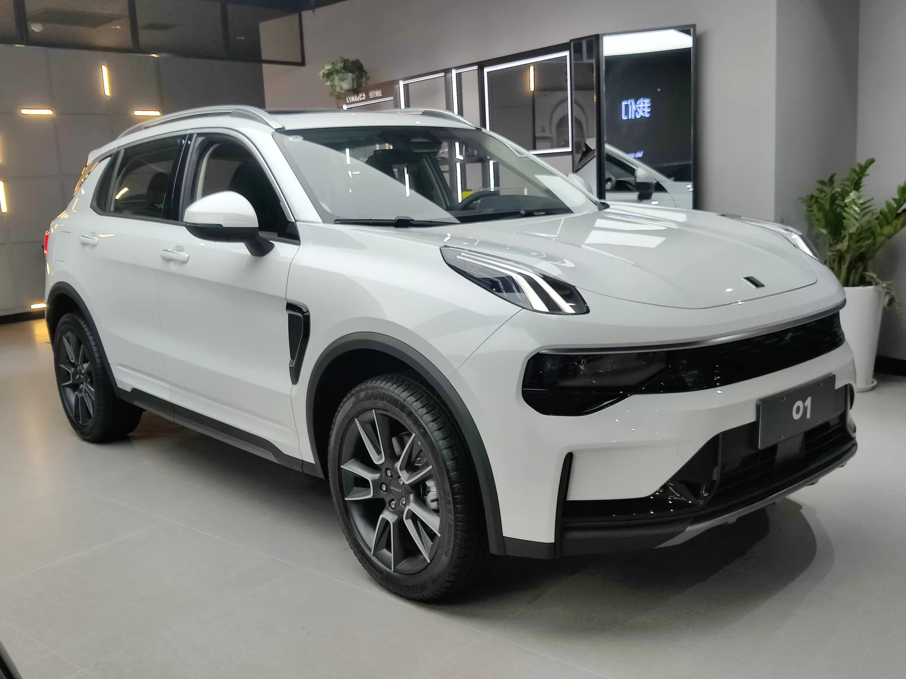
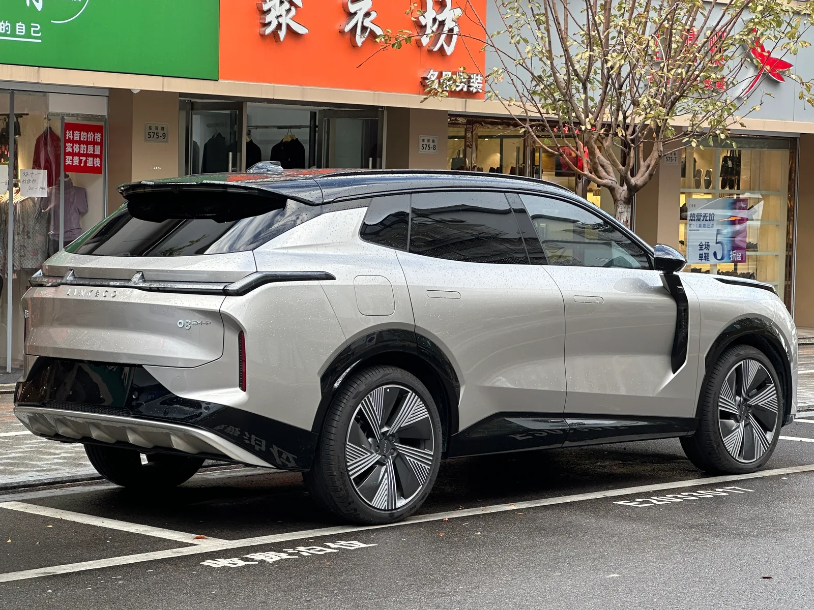
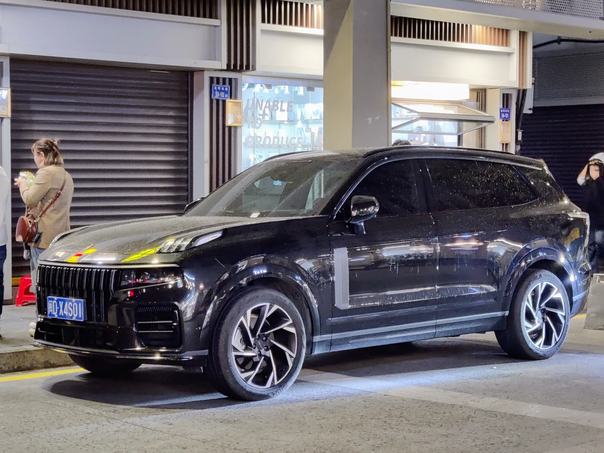

▲ 링크앤코 01. 유럽에서는 2027년 1월부터 이런 자체 쇼룸 대신 볼보 전시장에서 판매된다

▲ 유럽의 한 볼보 전시장. 2027년 1월부터 이런 볼보 매장에서 링크앤코 차량도 함께 판매된다
지리그룹이 유럽 판매 전략을 다시 짰다. 지난 9월 10일(현지시각) 볼보자동차와 지리자동차그룹은 2027년 1월부터 유럽 전역에서 링크앤코(Lynk & Co)의 영업·마케팅·소매 판매·애프터서비스(AS)를 볼보자동차가 전담하는 협약을 공식 체결했다고 밝혔다.
2020년 온라인 구독 모델과 도심 '클럽' 매장으로 유럽에 진출했던 링크앤코가, 6년 만에 형제 브랜드 볼보의 오프라인 딜러망 속으로 들어가는 셈이다.
1. 무엇을 합의했나 — 협약의 실체
핵심은 간단하다. 링크앤코가 유럽에서 팔리는 방식이 통째로 바뀐다. 지금까지 링크앤코는 자체 온라인 채널과 암스테르담·예테보리·안트베르펜·베를린·바르셀로나 등지의 '클럽(Club)' 콘셉트 매장을 통해 차량을 구독 형태로 공급해왔다.
2027년 1월부터는 이 구조가 사라진다. 볼보자동차가 유럽 전역의 독점 판매사(Exclusive Distributor)가 돼 영업, 마케팅, 소매 판매, 애프터서비스까지 상업·운영 전반을 맡는다. 볼보가 수십 년간 쌓아온 유럽 140여개 리테일 거점과 서비스센터망이 그대로 링크앤코 판매·정비 창구가 되는 것이다.
대신 지리자동차그룹은 글로벌 차량 디자인, 연구개발(R&D), 인증 업무를 계속 독립적으로 맡고 유럽 밖 지역 운영도 그대로 담당한다. 즉 '무엇을 만들지'는 지리가, '유럽에서 어떻게 팔지'는 볼보가 나눠 갖는 구조다.
새로 꾸려지는 볼보 내 링크앤코 사업부는 마르틴 페르손이 이끌며, 볼보 에릭 세베린손 최고상품책임자(CCO)에게 보고하는 라인을 탄다. 세베린손 CCO는 "볼보 리테일 파트너들이 더욱 폭넓고 차별화된 차량 포트폴리오를 확보해 판매와 서비스 기회를 크게 넓히게 될 것"이라고 설명했다.

▲ 링크앤코 08. 유럽에서는 지금까지 이런 차량을 온라인 구독과 클럽 매장으로만 공급해왔다
2. 지리그룹 브랜드 관계도 — 볼보·폴스타·링크앤코는 어떤 사이인가
이번 협약이 낯설지 않은 이유는 세 브랜드가 애초에 한 뿌리이기 때문이다. 지리홀딩그룹은 2010년 볼보를 인수한 이후 볼보·폴스타·링크앤코·지커·로터스·프로톤·LEVC 등 여러 완성차 브랜드를 거느린 다중 브랜드 그룹으로 성장했다.
| 브랜드 | 현재 위치 | 비고 |
|---|---|---|
| 볼보(Volvo) | 지리홀딩그룹 산하, 독자 경영 | 2010년 지리가 포드로부터 인수 |
| 링크앤코(Lynk & Co) | 지리자동차그룹 100% 자회사 | 2016년 지리·볼보 합작 설립 → 2024년 볼보 지분 전량 매각, 지커테크놀로지그룹에 편입 |
| 폴스타(Polestar) | 지리홀딩그룹 직속 자회사 | 과거 볼보가 지분 49.5% 보유 → 2024년 지리에 매각 |
| 지커(Zeekr) | 지커테크놀로지그룹(지리 100% 자회사) | 링크앤코와 한 그룹으로 통합 운영 |
즉 볼보와 링크앤코는 이제 자본 관계로 묶여 있지 않다. 볼보는 2024년 링크앤코 지분을 지리에 전량 매각했고, 링크앤코는 지커와 함께 지커테크놀로지그룹으로 편입됐다. 이번 협약은 지분 관계가 아니라 순수한 '판매 대행' 계약이라는 점이 특징이다. 형제 브랜드였다가 남남이 된 두 회사가, 이번엔 '유통 파트너'로 다시 손을 잡은 셈이다.

▲ 폴스타 스토어. 폴스타 역시 볼보 지분 매각을 거쳐 현재는 지리홀딩그룹 직속 자회사다
3. 왜 하필 볼보 전시장인가
중국 완성차 업체들의 유럽 진출 경쟁은 갈수록 치열해지고 있다. 관세 장벽과 현지 인증, 그리고 딜러망·서비스센터 같은 오프라인 인프라 구축 비용이 걸림돌로 꼽혀왔다. 링크앤코가 택한 구독·클럽 매장 모델은 초기 진입장벽은 낮췄지만, 판매 확대와 정비 인프라 확보에는 명확한 한계를 드러냈다.
반면 볼보는 유럽에서 수십 년간 쌓아온 소비자 신뢰도와 전국 단위 AS 네트워크를 이미 갖추고 있다. 지리 입장에서는 새로 인프라를 짓는 대신, 이미 검증된 형제 브랜드의 유통망에 올라타는 편이 훨씬 빠르고 효율적이다. 볼보 입장에서도 기존 전시장에 같은 지리 산하 라인업을 추가로 걸어두는 것만으로 판매·정비 매출을 늘릴 수 있다는 계산이 선다.
업계에서는 이를 중국 완성차 그룹이 관세 장벽과 시장 둔화를 뚫기 위해 유럽 내 기존 자산을 재활용하는 전략의 연장선으로 보고 있다. 실제로 지리그룹은 앞서 2028년부터 볼보의 스웨덴·벨기에 공장에서 자사 고급 브랜드 차량을 생산하겠다는 계획도 밝힌 바 있다. 생산은 볼보 공장에서, 판매는 볼보 매장에서 — 지리그룹의 유럽 전략이 점점 '볼보 인프라 공유'로 수렴하는 모양새다.
4. 링크앤코는 어떤 브랜드인가
링크앤코는 2016년 지리자동차와 볼보자동차가 함께 설립한 프리미엄 브랜드다. 볼보의 SPA·CMA 플랫폼과 기술력을 공유하며 '스타일리시하면서도 합리적인 가격'을 내세워 왔고, 대표 모델로는 준중형 SUV 01, 세단 03, 그리고 볼보 XC90과 플랫폼을 공유하는 대형 SUV 09, 플래그십 900 등이 있다.
중국 내수 시장에서는 일반 대리점 판매 방식을 쓰지만, 앞서 언급했듯 유럽에서는 2020년 진출 이후 정기 구독료를 내고 차를 이용하는 온라인 구독 모델과, 자동차 판매보다 라이프스타일 편집숍에 가까운 '클럽' 매장을 앞세웠다. 이 실험적 모델은 브랜드 인지도를 쌓는 데는 기여했지만, 2027년부터는 결국 전통적인 딜러 판매·AS 체계로 전환하게 됐다.

▲ 링크앤코 09. 볼보 XC90과 플랫폼을 공유하는 대형 SUV로, 링크앤코 라인업의 최상위급이다
5. 국내 진출 가능성은
국내 시장에서도 링크앤코는 이미 이름이 오르내리는 브랜드다. 같은 지리 산하의 지커(Zeekr)가 앞서 국내에 진출한 데 이어, 링크앤코 역시 국내 출시가 여러 차례 거론돼 왔다. 지리자동차의 하이브리드 플랫폼을 기반으로 한 모델이 르노코리아를 통한 국내 생산·판매 방식으로 검토된다는 보도도 나온 바 있다.
이번 유럽 판매 구조 개편이 국내 진출 시점에 직접 영향을 준다고 단정하긴 어렵다. 다만 지리그룹이 지역별로 '가장 효율적인 유통 파트너를 찾아 붙이는' 전략을 유럽에서 먼저 검증하고 있다는 점은 눈여겨볼 대목이다. 국내에서도 지커가 별도 법인으로 들어온 것처럼, 링크앤코 역시 독자 진출보다는 국내 파트너사를 낀 생산·판매 협업 형태로 등장할 가능성이 현재로선 더 유력하게 거론된다.
볼보코리아가 국내에서도 이미 탄탄한 서비스망을 운영 중인 만큼, 유럽식 '볼보 매장 활용' 모델이 국내에도 이식될지는 지켜볼 만한 포인트다. 다만 현재까지 국내 도입과 관련해 볼보코리아·지리 양측의 공식 입장은 나오지 않았다.